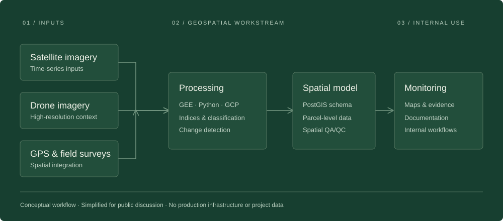

FEATURED CASE STUDY · FCF INDIA · 2025–PRESENT
Building the geospatial foundation for carbon dMRV.
From monitoring requirements to spatial data structures, processing workflows, and internal implementation for ARR and nature-based solutions.
MY ROLE
Geospatial workstream lead · Initial system design & implementation · GIS team leadership
Google Earth Engine / Python / GCP / PostGIS
Read the case study
A /
A workstream, built from the ground up.
Requirements → spatial design → analytical workflows → engineering handoff
Simplified architecture. No production infrastructure or project data.